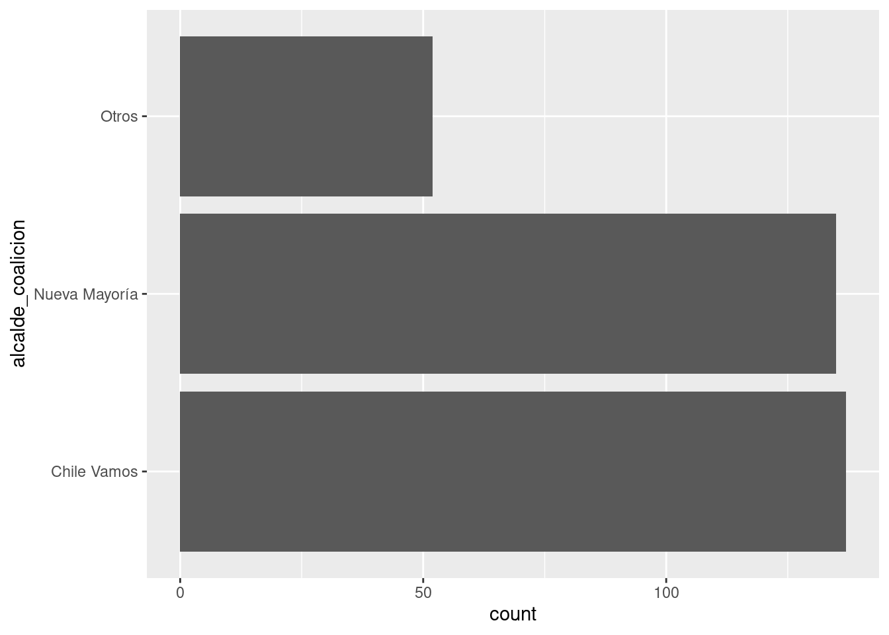
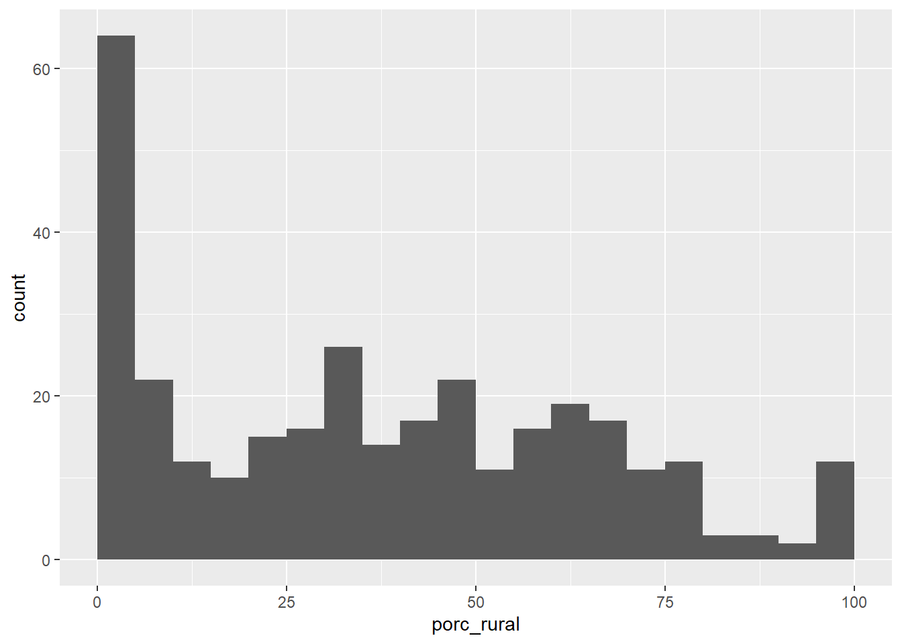
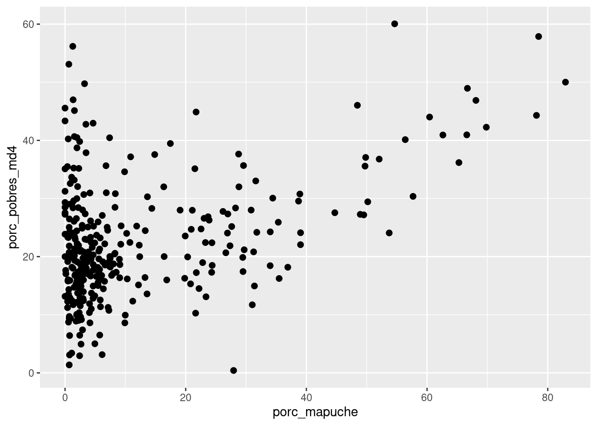
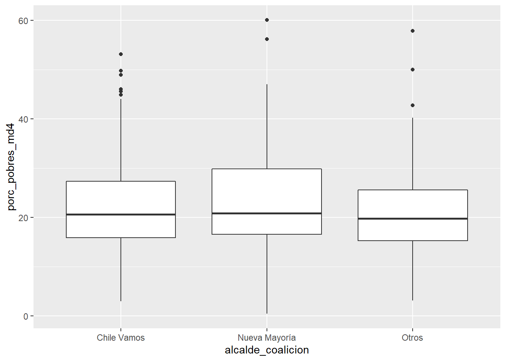
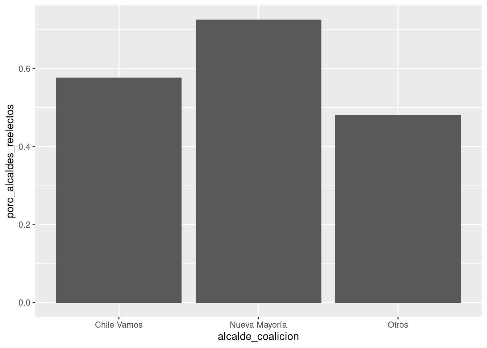
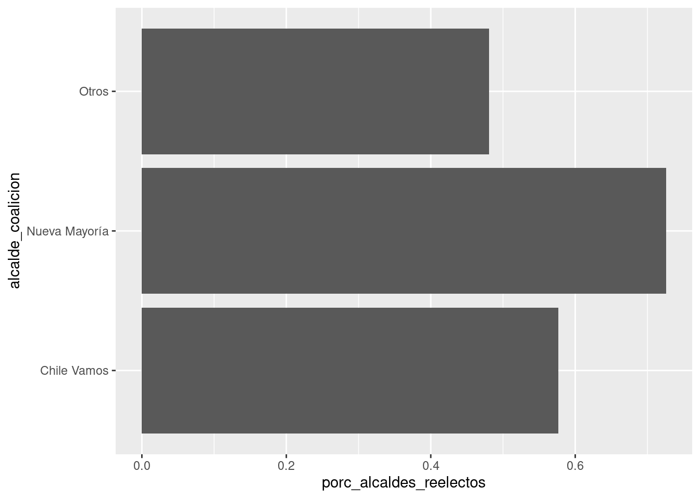
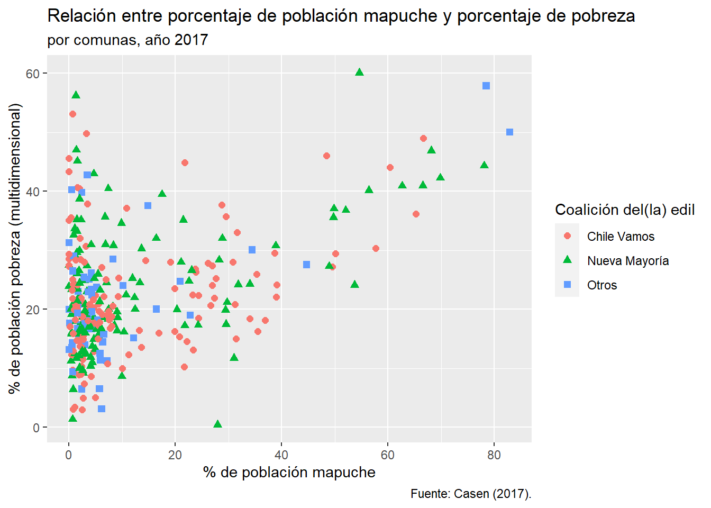

03A - Visualización de datos (intro)
Diapositivas de visualización de datos
Si quieres correr estos scripts localmente, acá puedes descargar el proyecto comprimido en .zip. Paquetes que necesitas tener instalados antes de comenzar con el proyecto (3A, 3B, 3C):
tidyverse.

Ilustración de Allison Horst.
Inicio: cargar paquetes, base de datos
library(tidyverse)Carga de base en formato rds
Hoy tenemos una base de datos con información de los municipios, construida a partir de dos fuentes: la encuesta Casen 2017 y los resultados de las elecciones municipales del año 2016.
df_municipios <- read_rds("datos/datos_municipios.rds")¿Te queda claro la información que registra cada variable? Si es que no, haz tus apuntes aquí:
Gráficos univariados
Gráfico univariado para variable categórica (barras)
Veamos la distribución de las coaliciones de los alcaldes en las comunas:
ggplot(data = df_municipios,
mapping = aes(x = alcalde_coalicion)) +
geom_bar()
Si queremos invertir los ejes, podemos usar el mapeo estético y = en vez de
x =:
ggplot(data = df_municipios,
mapping = aes(y = alcalde_coalicion)) +
geom_bar()
Gráfico univariado para variable continua (histograma)
Veamos la distribución del % de población rural en las comunas:
ggplot(data = df_municipios,
mapping = aes(x = porc_rural)) +
geom_histogram()## `stat_bin()` using `bins = 30`. Pick better value with `binwidth`.
Podemos controlar cómo se arma el histograma en los argumentos de geom_histogram():
bindwidth = 5hace que nuestros bins tengan un ancho de 5.boundary = 0asegura que los bins partan en 0, en vez de intentar centrarse en los números enteros (el defecto).closed = "left"ayuda aggplot2a decidir qué hacer con los valores que caen exactamente en los límites del bin. El valor “left” determina que los bins están cerrados a la izquierda, es decir, un valor intermedio caerá en la barra de la derecha. El valor “right”, el defecto, dirá que los bins están cerrados a la derecha, es decir, un valor intermedio caerá en la barra de la izquierda.
ggplot(data = df_municipios,
mapping = aes(x = porc_rural)) +
geom_histogram(binwidth = 5, boundary = 0, closed = "left")
(Ejercicio A)
Genera un gráfico univariado para alguna de la variables de la base de datos. ¿Hay algún patrón interesante? Tu código (recuerda, los chunks se insertan con Ctrl/Cmd+Shift+i):
Gráficos bivariados
Gráfico bivariado para dos variables continuas (dispersión)
Observemos la relación entre la variable de población mapuche en la comuna y su índice de pobreza multidimensional:
ggplot(data = df_municipios,
mapping = aes(x = porc_mapuche, y = porc_pobres_md4)) +
geom_point(size = 2)
Podemos añadir color y forma a los puntos según las coaliciones de los alcaldes:
ggplot(data = df_municipios,
mapping = aes(x = porc_mapuche, y = porc_pobres_md4,
color = alcalde_coalicion, shape = alcalde_coalicion)) +
geom_point(size = 2)
Gráfico bivariado para x discreta + y continua: boxplot/violin
Veamos la relación entre la coalición del edil y la pobreza de la comuna:
ggplot(data = df_municipios,
mapping = aes(x = alcalde_coalicion, y = porc_pobres_md4)) +
geom_boxplot()
ggplot(data = df_municipios,
mapping = aes(x = alcalde_coalicion, y = porc_pobres_md4)) +
geom_violin()
Gráfico bivariado para x discreta + y continua: columnas (ránking)
ggplot(data = df_municipios %>%
group_by(alcalde_coalicion) %>%
summarize(porc_alcaldes_reelectos = sum(alcalde_reelecto) / n()),
mapping = aes(x = alcalde_coalicion, y = porc_alcaldes_reelectos)) +
geom_col()## `summarise()` ungrouping output (override with `.groups` argument)
A veces queremos hacer estos gráficos de forma horizontal (“gráfico de ránking”). Podemos hacer un cambio similar al anterior, con los mapeos estéticos invertidos. Luego aprenderemos a ordenar las barras, para hacer ránkings.
ggplot(data = df_municipios %>%
group_by(alcalde_coalicion) %>%
summarize(porc_alcaldes_reelectos = sum(alcalde_reelecto) / n()),
mapping = aes(x = porc_alcaldes_reelectos, y = alcalde_coalicion)) +
geom_col()## `summarise()` ungrouping output (override with `.groups` argument)
Un poco de personalización: etiquetas
Volvamos a uno de los gráficos que hicimos antes:
ggplot(data = df_municipios,
mapping = aes(x = porc_mapuche, y = porc_pobres_md4,
color = alcalde_coalicion, shape = alcalde_coalicion)) +
geom_point(size = 2)
Con el comando labs() dentro de la cadena de ggplot2 podemos poner etiquetas que harán al gráfico más legible:
ggplot(data = df_municipios,
mapping = aes(x = porc_mapuche, y = porc_pobres_md4,
color = alcalde_coalicion, shape = alcalde_coalicion)) +
geom_point(size = 2) +
labs(title = "Relación entre porcentaje de población mapuche y porcentaje de pobreza",
subtitle = "por comunas, año 2017",
caption = "Fuente: Casen (2017).",
# ahora para los mapeos estéticos:
x = "% de población mapuche",
y = "% de población pobreza (multidimensional)",
color = "Coalición del(la) edil",
shape = "Coalición del(la) edil")
(Ejercicios B-D)
¡En todos los ejercicios genera buenas etiquetas para tus gráficos, utilizando labs()!
Genera un plot de violín para la relación entre una variable x discreta y una variable y continua en la base. Tu código:
Genera un gráfico de dispersión entre dos variables continuas de la base. Cambia el color y/o forma de los puntos de acuerdo a una de las variables categóricas de la base (si es que vas a utilizar una variable dummy para esto, ingrésala como
as.factor(variable)en el mapeo estético).Ayudándote del torpedo para hoy, genera dos gráficos que incluya geoms que no hayamos visto hasta ahora.
d1. Tu código:
d2. Tu código: